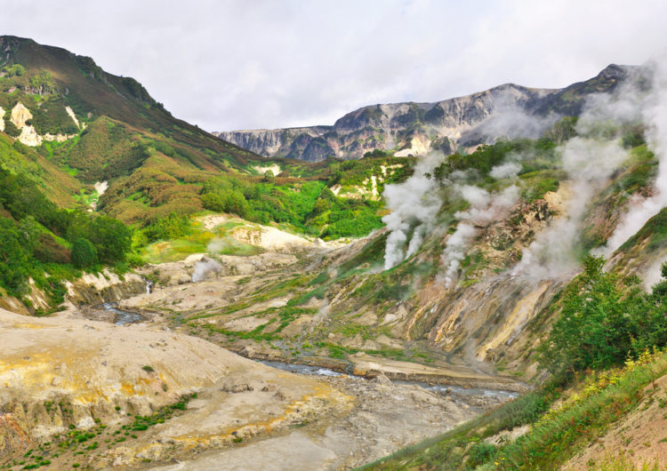

4. Долина гейзеров (Камчатка)

Путешественники, задающие бывалым туристов вопросы о том, что посетить в России такого, что запомнится им своей волшебной природной красотой, получают ответ: «Долину гейзеров, расположенную на Камчатке»! Данное место считается одним из самых красивых в мире. Этот вулканический каньон, достигающий в ширину двух километров и простирающийся на четыре километра, напоминает фантастический «город» из сотен гейзеров и горячих источников. Сотни лет назад здесь было озеро, но под влиянием непрерывных процессов, происходящих в вулкане, оно почти полностью исчезло, а на его месте забили фонтаны кипятка. Долину гейзеров открыли буквально накануне войны 1941 года. Здесь, у реки Гейзерной бьет фонтаном гейзер Великан. Туристы, приехавшие посетить эти достопримечательности России, могут наблюдать за его работой, поднявшись на специальную смотровую площадку на правом берегу реки. За минуту Великан выбрасывает вверх 30 тонн горячей воды, причем водяной столб достигает высоты девятиэтажки! Такое грандиозное, воистину фантастическое зрелище сопровождается мощнейшим рокотом. К западу от Великана лежит Жемчужный гейзер, спрятавшийся на дне колодца и покрытый гейзеритом, немного напоминающим природный жемчуг.